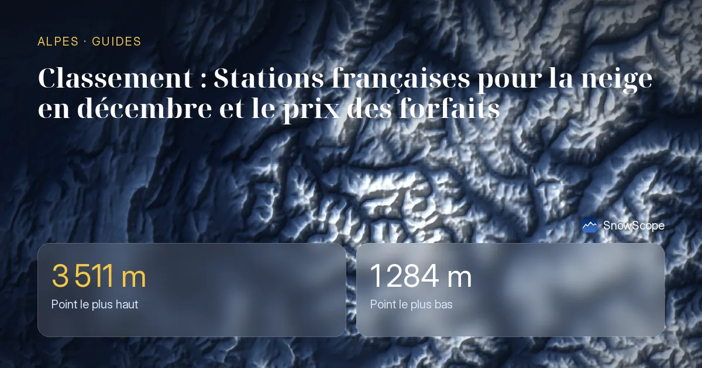

Classement : Stations françaises pour la neige en décembre et le prix des forfaits
Les Karellis, Les 2 Alpes et Montgenèvre sont en tête de notre classement de décembre, alliant prix des forfaits maîtrisés et neige fiable sur 46 hivers passés. Sept stations alpines figurent sur la liste, tandis que Cauterets dans les Pyrénées souligne le manque de neige en début de saison.
Consultez les prévisions neige en temps réel pour Les 2 Alpes sur l'application SnowScopeHauteurs de neige, alertes poudreuse et carte 3D, gratuitement.
Comment nous avons comparé la neige et le prix
Les forfaits bon marché ne sont avantageux que si les pistes ont de la neige. Nous avons classé ces huit stations en utilisant les tarifs vérifiés de l'hiver 2026-27 ainsi que notre historique de neige de 46 hivers passés.
Nous avons comparé la profondeur habituelle en décembre, les chiffres de faible et forte épaisseur (1 hiver sur 10), et les parts hebdomadaires atteignant 30 cm ou 50 cm. Les bases des remontées à 1 219 m, 1 284 m et 1 406 m démarrent avec peu de neige, donc l'altitude compte.

Le top trois pour la neige et le prix
Les Karellis arrivent en tête pour le rapport qualité-prix et la neige régulière. Le forfait adulte 18+ coûte 36,00 EUR (1 jour) et 191,00 EUR (6 jours) sur 45 km de pistes balisées et 14 remontées. À mi-montagne, à 2 017 m, on trouve 63 cm habituels (28 cm faible, 117 cm fort), atteignant 30 cm ou plus dans 70 %, 85 %, 98 % et 98 % des hivers passés durant les quatre semaines de décembre.
Les 2 Alpes arrivent en deuxième position pour la neige en altitude sur 108 km de pistes et 46 remontées jusqu'à 3 511 m. Sa base à 1 284 m affiche 16 cm en moyenne (0 cm faible, 39 cm fort), atteignant 30 cm dans seulement 2 % des hivers passés entre le 1er et le 7 décembre. Skiez à mi-montagne à 2 397 m (75 cm habituels) ou à 3 511 m (176 cm habituels, 72 cm faible, 302 cm fort), où 50 cm ou plus arrivent dans 96 % à 100 % des hivers passés. Les forfaits coûtent 68,00 EUR (1 jour Freedom), 266,50 EUR (6 jours), ou 42 EUR les 28-29 novembre 2026.
Montgenèvre est troisième avec une base à 1 795 m (62 km de pistes, 24 remontées) affichant 56 cm habituels (22 cm faible, 102 cm fort) et 30 cm ou plus dans 61 %, 76 %, 89 % et 96 % des hivers passés. Les forfaits coûtent 45,50 EUR jusqu'au 18 décembre 2026, puis 56,00 EUR (301,00 EUR pour 6 jours). La neige à mi-montagne a augmenté entre les 15 premiers hivers et les 15 derniers aux Karellis (55 cm à 64 cm), aux 2 Alpes (63 cm à 77 cm) et à Montgenèvre (49 cm à 76 cm).
Quatre options alpines intermédiaires
Valloire-Valmeinier (131 km de pistes, 34 remontées) propose un forfait à 20 EUR les 5-6 décembre 2026, ou 54,90 EUR (1 jour) et 278,50 EUR (6 jours). Sa base à 1 406 m affiche 29 cm en moyenne (12 cm faible, 58 cm fort), tandis que 2 072 m affiche 66 cm habituels (31 cm faible, 120 cm fort). Serre Chevalier (157 km de pistes, 70 remontées) facture 276,00 EUR pour 6 jours jusqu'au 18 décembre 2026, puis 345,00 EUR, avec 30 cm habituels à 1 219 m (8 cm faible) et 111 cm à 2 765 m.
Orcières Merlette (49 km de pistes, 26 remontées ; forfait 6 jours Pass Horizon à partir de 227 EUR) affiche 60 cm à 2 278 m (21 cm faible, 108 cm fort). Vars-Risoul (131 km de pistes, 38 remontées ; 58 EUR 1 jour, 298 EUR 6 jours) affiche 51 cm en moyenne à 2 177 m (20 cm faible, 97 cm fort). Les quatre stations ont gagné en neige à mi-montagne entre les 15 premiers hivers et les 15 derniers : Valloire-Valmeinier (55 cm à 69 cm), Serre Chevalier (46 cm à 63 cm), Orcières Merlette (51 cm à 61 cm) et Vars-Risoul (42 cm à 62 cm).
Cauterets illustre le fossé pyrénéen
Cauterets arrive en dernier car son enneigement est en retard par rapport à ses prix. Son domaine skiable compte 25 km de pistes et 9 remontées (1 725 m à 2 420 m), avec des forfaits à 46 EUR (1 jour) et 276 EUR (6 jours).
La profondeur à la base à 1 725 m est de 23 cm habituels (3 cm faible, 66 cm fort). À mi-montagne, à 2 072 m, la moyenne est de 33 cm (5 cm faible, 87 cm fort), atteignant 30 cm dans 43 % des hivers passés du 1er au 7 décembre et du 8 au 14 décembre, 52 % du 15 au 21 décembre, et 67 % du 22 au 28 décembre. La neige au sommet est de 42 cm habituels, tandis que la profondeur à mi-montagne est passée de 35 cm lors des 15 premiers hivers à 23 cm lors des 15 derniers.
Les meilleures semaines pour réserver en décembre
Pour la période du 1er au 7 décembre, skiez au-dessus de 2 017 m ou choisissez des remontées hautes comme Les 2 Alpes à 3 511 m (98 % de chance d'avoir 30 cm ou plus) ou Valloire-Valmeinier à 2 738 m (98 %).
D'ici le 15-21 décembre, la neige à mi-montagne atteint 30 cm ou plus dans 98 % des hivers passés aux Karellis, aux 2 Alpes, à Valloire-Valmeinier et à Montgenèvre, avant que les prix n'augmentent le 19 décembre 2026 à Montgenèvre et Serre Chevalier.
Conseils aux skieurs
- Réservez avant le 19 décembre 2026 à Montgenèvre (forfait journée 45,50 EUR) ou Serre Chevalier (forfait 6 jours 276,00 EUR) pour des tarifs plus bas.
- Du 1er au 7 décembre, évitez les bases basses aux 2 Alpes (1 284 m) et Serre Chevalier (1 219 m) et skiez sur les remontées plus hautes.
- Visez la période du 15 au 21 décembre pour 98 % de probabilité de neige à mi-montagne dans les meilleures stations alpines avant le début des tarifs de vacances.
- Réservez sur le site officiel de la station et consultez la bulletin d'avalanches avant de skier hors-piste.
Autres cartes (sites externes)
Références et crédits
- Les 2 Alpes, official ski pass shop, prices 2026-27 www.skipass-2alpes.com/en/pricing
- Les 2 Alpes, official ski pass shop, opening weekend offer www.skipass-2alpes.com/fr/forfaits/ski
- Valloire, official ski pass shop (Galibier-Thabor), winter 2026-27 skipass.valloire.com/fr/
- Les Karellis, official prices 2026-2027 www.leskarellis.com/fr/tarifs-2026-2027-sans-lien
- Montgenèvre, official ski pass prices 2026-27 skipass.montgenevre.com/fr/tarifs-guichet
- Orcières, official ticketing, winter 2026-27 pass.orcieres.com/en/ticketing
- Risoul, official ski pass page, Forêt Blanche 2026-27 risoul.labellemontagne.com/fr/hiver/forfaits/risoul-foret-blanche/
- Risoul, official 6-day Forêt Blanche pass page 2026-27 risoul.labellemontagne.com/fr/hiver/forfaits/6-jours-foret-blanche/
- Serre Chevalier, official booking site, ski passes 2026-27 reservation.serre-chevalier.com/achetez-vos-ski-pass-serre-chevalier-et-autres-prestations.html
- N'PY, Cauterets official ski pass prices 2026-27 www.n-py.com/fr/cauterets/forfaits-ski
- SnowScope, December snow at three heights and today's snow map snowscope.app/
À propos de ces chiffres
Chiffres de neige : historique SnowScope, 46 hivers passés (1980-81 à 2025-26) à trois altitudes de chaque station (un modèle du passé corrigé de l'altitude : une estimation pour une zone, pas des mesures de la station) ; chiffres de décembre calculés à partir des hauteurs quotidiennes de ces hivers. Neige actuelle et tendance à deux semaines : prévisions SnowScope (tendance ECMWF et GFS, une fourchette, pas une promesse). Remontées et pistes : cartographie OpenSkiMap. Prix : pages officielles des stations ci-dessous, lues le 2026-11-13 ; les prix peuvent changer, vérifiez avant de réserver.
Citer ce bulletin
Pour la recherche, l'enseignement ou la presse : chiffres et graphiques réutilisables librement sous CC BY 4.0 avec cette citation.
SnowScope (2026), Classement : Stations françaises pour la neige en décembre et le prix des forfaits, https://snowscope.app/blog/fr/2026/11/cheapest-snow-sure-ski-resorts-france-december-2026.html, consulté le 2026-11-14
SnowScope (Atlas Labs). (2026, November 14). Classement : Stations françaises pour la neige en décembre et le prix des forfaits. SnowScope snow reports. https://snowscope.app/blog/fr/2026/11/cheapest-snow-sure-ski-resorts-france-december-2026.html
BibTeX
@misc{snowscope2026cheapestsnowsureskiresor,
author = {{SnowScope (Atlas Labs)}},
title = {Classement : Stations françaises pour la neige en décembre et le prix des forfaits},
year = {2026},
month = nov,
howpublished = {\url{https://snowscope.app/blog/fr/2026/11/cheapest-snow-sure-ski-resorts-france-december-2026.html}},
note = {Published 2026-11-14 13:29 UTC; accessed 2026-11-14}
}· CC BY 4.0 · Méthodes, données et outils →
Les 2 Alpes : neige et température selon l'altitude, cet hiver vs l'hiver dernier (outils) →
Suivre Les 2 Alpes
Gratuit : un message quand la neige arrive, et la météo chaque matin.
Autres bulletins neige

Orcières Merlette offre une base élevée à 1 826 m et un forfait 6 jours dès 227 EUR, ce qui en fait un choix fiable pour un séjour au ski en décembre.

Montgenèvre affiche 56 cm de neige habituelle en décembre à son pied de station, offrant aux skieurs du week-end une meilleure couverture précoce que Sestriere, de l'autre côté de la frontière.

Les Karellis propose 45 km de pistes et un forfait adulte 6 jours à 191,00 EUR avec 98 % de chances d'avoir de la neige à mi-montagne fin décembre.